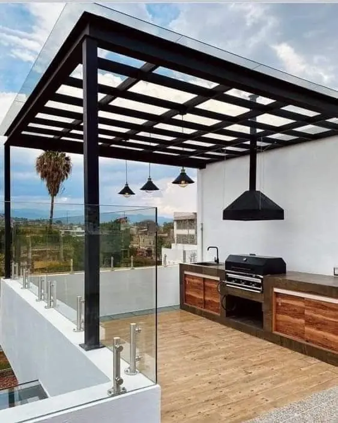

Mochileros, nómadas digitales y viajeros jóvenes llenan los hostales de Isla Mujeres todo el año, y un hostal bien diseñado gana más por m² que muchos hoteles. Construimos y convertimos hostales para operadores e inversionistas: dormitorios con cápsulas privadas, cuartos con baño, baños compartidos que se mantienen secos, lockers, un rooftop o área social que vende bebidas, y la seguridad contra incendio y licencias para abrir.

Literas tipo cápsula con cortina, luz, contactos y locker por cama.
Baños compartidos y privados con drenaje y ventilación para alto uso.
Rooftop bar, alberca, cocina y coworking que generan ingreso.
Salidas, detección, extintores y visto bueno de Protección Civil.
Acceso con tarjeta, CCTV y guarda equipaje.
Casas y edificios pequeños convertidos con revisión estructural.
El ingreso de un hostal son las camas por m² y el bar; sus reseñas son los baños y el ruido. Planeamos el número de camas contra la proporción de baños, la ventilación y la separación acústica entre dormitorios y área social, para que se mantenga lleno y bien calificado.
Muchos hostales empiezan en una casa o edificio pequeño. Revisamos estructura, uso de suelo y el número de huéspedes que permitirá la licencia antes de comprar o rentar, y convertimos por fases si hace falta para que el primer piso genere mientras se termina el resto.
Isla Mujeres tiene el viento y la sal más agresivos de la región y todo cruza en ferry o barcaza; los costos son alrededor de 26% mayores que en Cancún. Los proyectos son pequeños y bajos, con precios de venta altos por m².
Las licencias las otorga el municipio de Isla Mujeres; tramitamos uso de suelo, licencia de construcción con DRO y Protección Civil.
| Concepto | Costo |
|---|---|
| Hostal nuevo, por m² | $18,000–$30,000 |
| Conversión de casa o edificio existente, por m² | $8,000–$15,000 |
| Por cama, obra nueva con mobiliario | $227,000–$403,000 |
| Rooftop bar y alberca | $3.1M–$7.6M |
| Hostal de 60 camas, conversión | $7.6M–$17.6M |
| Hostal de 120 camas, obra nueva | $31.5M–$56.7M |
En Isla Mujeres: Construcción comercial
Construcción de hostales en otras ciudades: Cancún · Playa del Carmen · Holbox · Bacalar · Cozumel
Relacionado: Construcción de hostales · Casas club de golf · Cocinas industriales
Calculadora de costo comercial · Plazas · Oficinas
Remodelación de hoteles
Envíe los planos o el terreno; visitamos, revisamos uso de suelo y permisos, y le enviamos un presupuesto por partidas. Respuesta en 2 minutos.
Cotizar por WhatsAppSu opinión ayuda a otros propietarios a decidir, y a nosotros a mejorar.
Escribir una reseñaVer reseñas en Google